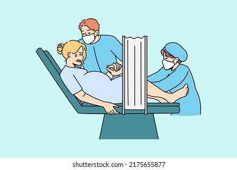

Biologia
Texto .
a. aqui va el video
b. El embarazo ocurre cuando un espermatozoide fecunda un óvulo, lo que sucede generalmente después de una relación sexual sin protección o a través de técnicas de reproducción asistida. Aquí te explico los pasos básicos del proceso:
1. Ovulación: En el ciclo menstrual, aproximadamente en el día 14 (aunque varía de una persona a otra), uno de los ovarios libera un óvulo. Esto se llama ovulación. El óvulo viaja desde el ovario a través de las trompas de Falopio hacia el útero.
2. Fecundación: Si el óvulo es alcanzado por un espermatozoide dentro de las 12 a 24 horas después de la ovulación, ocurre la fecundación. El espermatozoide entra en el óvulo, formando una célula llamada cigoto.
3. Implantación: El cigoto comienza a dividirse en múltiples células mientras se desplaza hacia el útero. Al llegar al útero, se convierte en un blastocisto. Entre 5 y 7 días después de la fecundación, el blastocisto se adhiere a la pared del útero, en un proceso llamado implantación
4. Desarrollo embrionario: Tras la implantación, las células del blastocisto comienzan a diferenciarse y formar las estructuras básicas del embrión. La placenta también empieza a desarrollarse, y es la encargada de nutrir al embrión durante el embarazo.
5. Embarazo confirmado: Una vez que el embrión se implanta en el útero, el cuerpo comienza a producir una hormona llamada gonadotropina coriónica humana (hCG), que es lo que detectan las pruebas de embarazo.

¿ Que es el desarrollo embronario.
* El desarrollo embrionario es el periodo de tiempo que comprende desde la unión del óvulo y el espermatozoides, es decir, la fecundación hasta el día del parto.
Cuando se produce la fecundación correctamente, se forma el cigoto. Esta correspondería a la primera etapa del proceso de desarrollo embrionario. A continuación, tendría lugar la formación de la blástula, la gástrula y, por último, la diferenciación.

¿ Que es el parto.
* El parto normal es el proceso fisiológico único con el que la mujer finaliza su gestación a término, en el que están implicados factores psicológicos y socioculturales. Su inicio es espontáneo, se desarrolla y termina sin complicaciones, culmina con el nacimiento y no implica más intervención que el apoyo integral y respetuoso del mismo.
TIPOS DE PARTO .
* Vaginal. El parto vaginal es el más frecuente y fisiológico. El parto vaginal también puede ser instrumental, que es aquel que se lleva a cabo con la utilización de fórceps, espátulas o ventosas.
* Cesárea. Incisión o corte en el abdomen y en el útero para extraer al bebé. Pueden ser programadas para una fecha concreta por motivos de salud de la madre o del feto o ser necesaria durante el transcurso del parto.
* Parto normal El parto normal es aquel que se desencadena de manera espontánea entre las 37 y 42 semanas de gestación, empieza con un aumento del número de contracciones y de su intensidad, o bien, puede ser por una rotura de la bolsa de las aguas, sin tener contracciones. Se debe acudir a urgencias si:
*Las contracciones son regulares. 1 cada 5 minutos durante 2 horas en el primer parto o 1 cada 5 minutos durante 1 hora en los partos siguientes.
*Rotura de la bolsa de aguas. Si las aguas son claras puede ir a urgencias tranquilamente. En el caso de que el color de las aguas sea de color verde o marrón se debe acudir rápidamente a urgencias.

c.